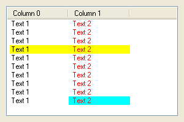

SetGadgetItemColor()
语法
SetGadgetItemColor(#Gadget, Item, ColorType, Color [, Column])概要
Changes a color attribute of the given gadget item.
参数
#Gadget The gadget to use. Item The item to use. The first item in the gadget has index 0. If this parameter is set to -1, the color will be applied to the given 'Column' in all gadget items. ColorType The kind of color attribute to change. This can be one of the following values: #PB_Gadget_FrontColor : Item text #PB_Gadget_BackColor : Item backgroundColor The new color for the attribute. RGB() can be used to get a valid color value. To remove the custom color and go back to the default system color, set the 'Color' parameter to -1. Column (optional) The column to use for gadgets that support multiple columns. The first column has index 0. The default is column 0. If the this parameter is set to -1, the color will be applied to all columns of the given Item.
返回值
无.
Remarks
This function is supported by the following gadgets:
- ListIconGadget()
- TreeGadget()
Note: With activated Windows XP style the color settings will probably be ignored or overwritten by the style.
示例
If OpenWindow(0, 0, 0, 300, 300, "SetGadgetItemColor", #PB_Window_SystemMenu | #PB_Window_ScreenCentered) ListIconGadget(0, 10, 10, 280, 280, "Column 0", 100) AddGadgetColumn(0, 1, "Column 1", 100) For i = 1 To 10 AddGadgetItem(0, -1, "Text 1"+Chr(10)+"Text 2") Next SetGadgetItemColor(0, -1, #PB_Gadget_FrontColor, $0000FF, 1) SetGadgetItemColor(0, 3, #PB_Gadget_BackColor, $00FFFF, -1) SetGadgetItemColor(0, 9, #PB_Gadget_BackColor, $FFFF00, 1) Repeat Until WaitWindowEvent() = #PB_Event_CloseWindow EndIf

参阅
GetGadgetItemColor(), GetGadgetColor(), SetGadgetColor()
已支持操作系统
所有